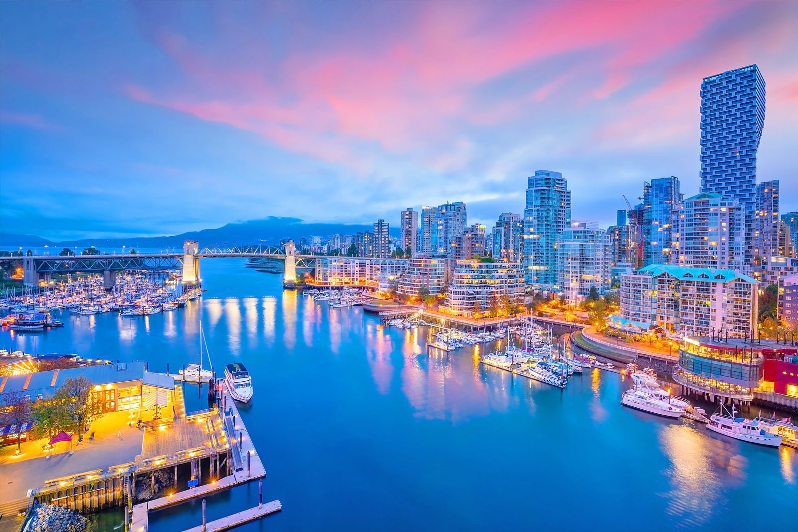

Análisis de la Obra
Sinopsis: Wade Wilson, tras un tortuoso tratamiento médico, busca venganza contra Francis Freeman (Ajax). A diferencia de otros héroes, Deadpool es consciente de que está en un cómic o película.
Contexto: Estrenada en 2016, demostró que el público adulto buscaba historias de superhéroes más crudas y honestas, alejadas del estilo familiar clásico.
Detalles Técnicos y Locación
La película fue dirigida por Tim Miller y contó con el guion de Rhett Reese y Paul Wernick.
Locación: Se filmó mayoritariamente en Vancouver, Canadá, aprovechando los exteriores urbanos para las escenas de persecución.

Banda Sonora Oficial
Escuchá el tema principal que ambienta la película mientras navegás por el sitio: